For all operating systems, make sure you connect to the
eduroam network first. VPNs may cause problems when
attempting to add printers/print.
This generally requires that your user is a member of the
lpadmin group. You can see if you are already a member by
running groups $USER in any terminal, which will output
your username and all groups you belong to. If you don't see
lpadmin listed, run
sudo usermod -a -G lpadmin [username] to add
[username] to the group. You may need to restart
afterwards for the change to take effect.
Go to http://localhost:631/admin/ to access the CUPS utility. If prompted, login using your username or password. You should then see the CUPS administration screen:
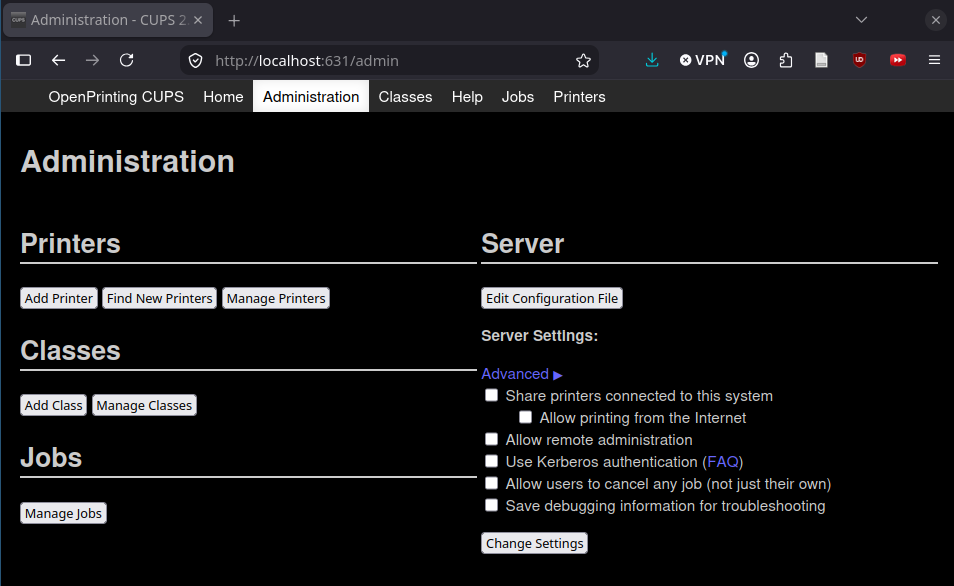
Select "Add printer". On the next screen, select "Internet Printing Protocol (ipp)", then hit "Continue".
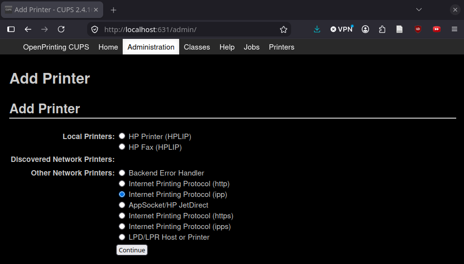
Type in the address: ipp://[IP address]/ipp/print
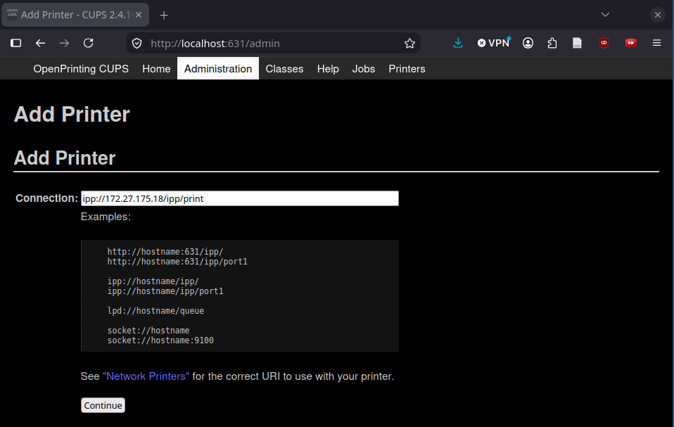
Select the printer make (Ricoh) from the list, then hit "Continue".
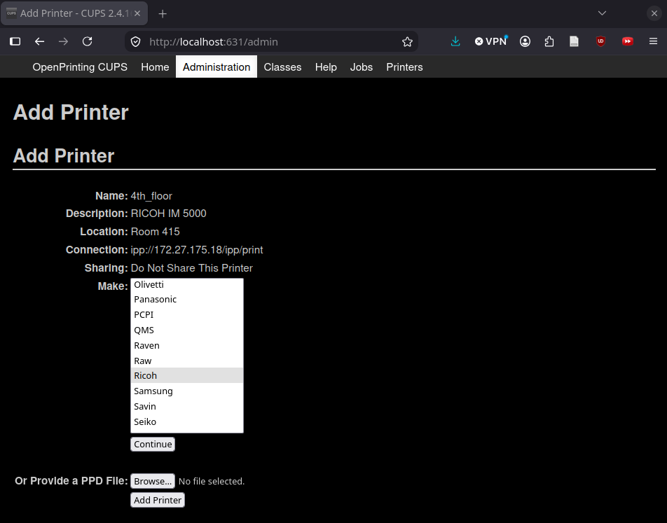
Select the printer model. This is likely IM 5000, but check the specific printer you're adding. You can choose either a PDF or PostScript (PS) driver; PDF may be faster, while PS is theoretically capable of higher image quality. After selecting the driver, hit "Continue".
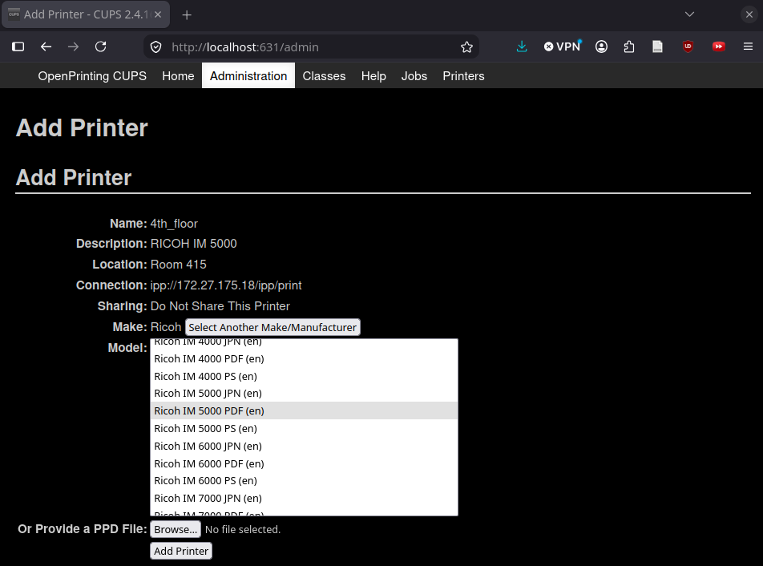
If you do not see the correct model, you can use IPP
Everywhere drivers, or you can look on Ricoh's site for a
.ppd file for the printer and use Option 2
below.
.ppd file for the printer from
Ricoh's site, and upload it now.
Hit "Set Printer Options" to install the finisher and set defaults. (This can all be done later as well.)
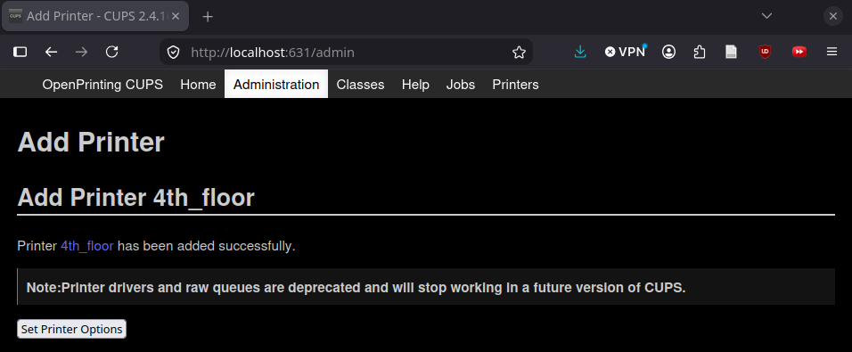
Add the finisher: on the screen to select default options, select "Finisher SR3260" in the finishers dropdown. (You can check the sticker on the inside of the specific finisher for its model number if selecting SR3260 does not work.)
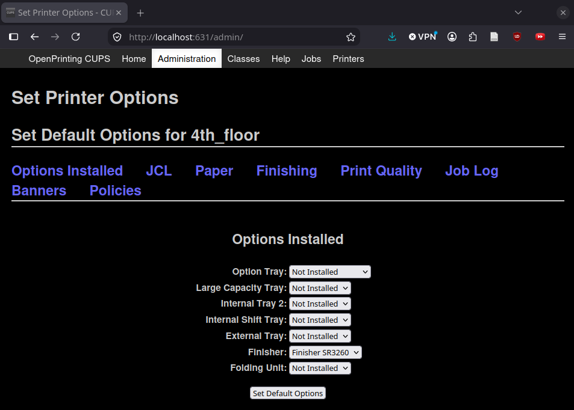
CUPS can also be used to manage printers, even those added via a system GUI. From the CUPS admin page, hit "Manage Printers" and click on the name of the printer you wish to modify.
/etc/cups/printers.conf but it is likely easier to
delete and re-add the printer with the desired name.
Many systems provide a printing GUI, which can be accessed with
Ctrl + p. However, it is also possible to print from the
command line.
To print using the lp System V utility:
-d [printername] to specify the printer to use. You
can also run lpoptions -d [printername] to set
[printername] as your default printer.
-n [number] to print [number] copies.
-o Duplex=[value] to choose one/two-sided printing.
Valid values are None for one-sided prints,
DuplexNoTumble for two-sided prints which flip on long
edge (more common), and DuplexTumble for two-sided
prints which flip on short edge (less common, used with landscape
pages).
-o StapleLocation=[value] to staple. Valid values
are UpperLeft, UpperRight,
LeftW (two staples on left side), RightW,
UpperW for staples, and
StaplessUpperLeft and
StaplessUpperRight for embossing (up to 5 sheets).
You can also use lpr to print; see its
man page for details.
These instructions were developed for the GNOME desktop environment (which is the default on Ubuntu). Other desktop environments such as KDE or Cosmic will likely offer similar graphical user interface options, but if you cannot find the correct options to add a printer/use finishing options then try the CUPS instructions instead.
.dmg file to install the drivers.
(You can delete the file after installation if desired.)
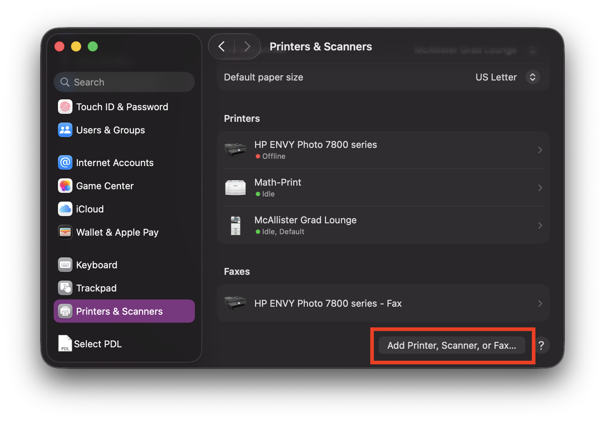
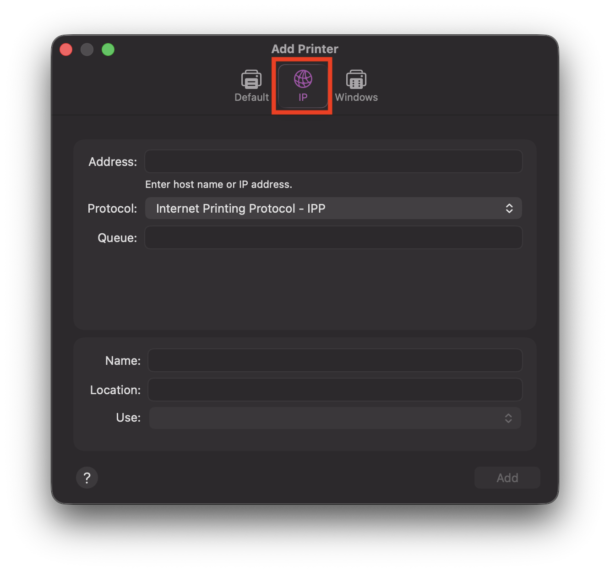
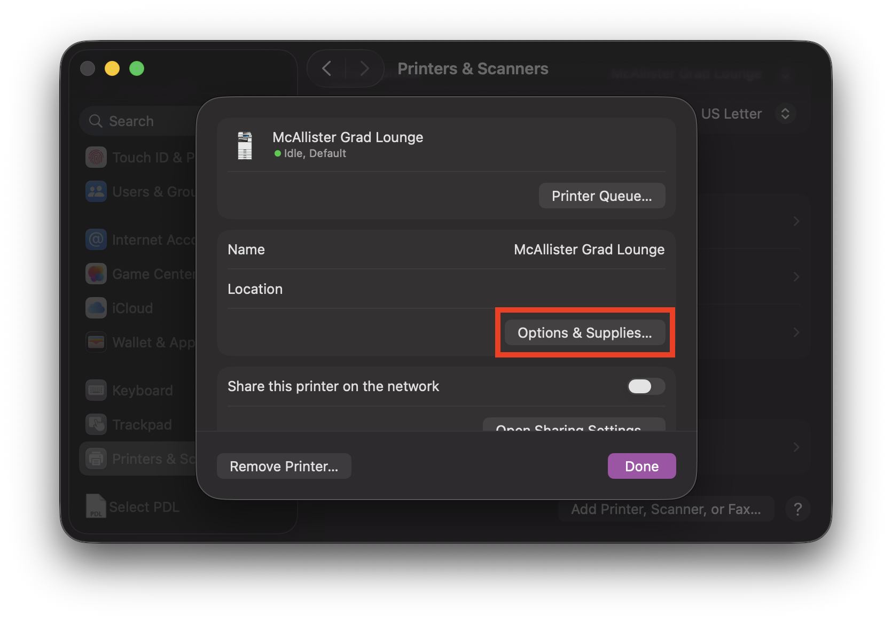
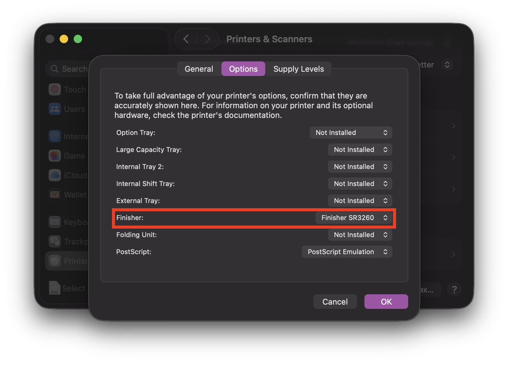
The keyboard shortcut to print on Mac is Command + p.
If you have installed the finisher, finishing options can be found under Printer Options > Printer Features by selecting "Finishing" from the Feature Sets dropdown menu.
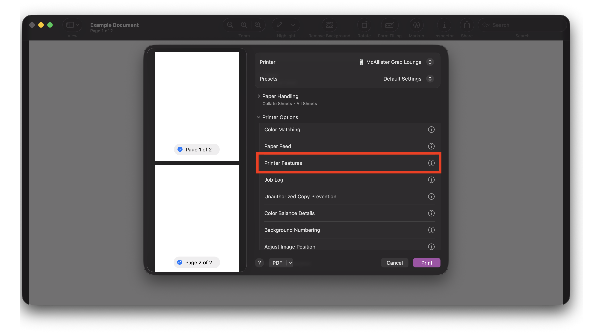
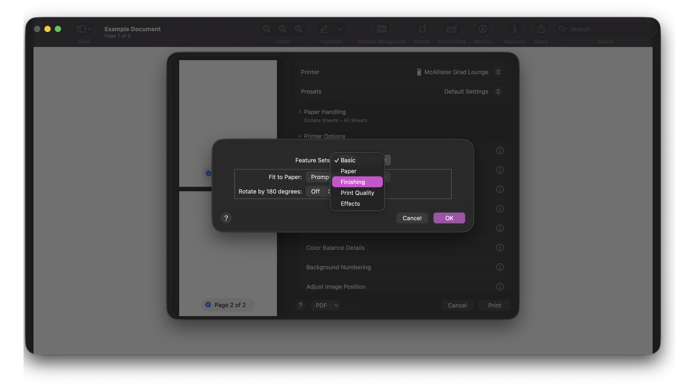
Option 1: use the RICOH device manager
Option 2: manage your own drivers
You can download just the RICOH IM 5000 drivers. Then add the printer as an IPP device in system settings, and select the drivers you downloaded. You will need to manage driver updates yourself if you choose this method.
Option 3: add printer directly
You can also add the printer as an IPP device using Microsoft's default drivers. However, you cannot use all finisher options if you do this, and you cannot set a custom default printer behavior.
If the finisher is not automatically recognized, you will need to add it to make stapling available and set default stapling/duplexing behaviors.
You can also use NFC connection if you have an NFC-capable device; this does not require adding the printer in advance.
You can send a print job from inside the RICOH Connector app:
You can also start from the file you want to print:
You can also send a print job via NFC. On the "MFP/Printer" screen, switch to "Connect with NFC" (instead of QR code/bluetooth/a previously added Wi-Fi printer). Select print options as above, then tap the printer with your device where indicated to start the print.